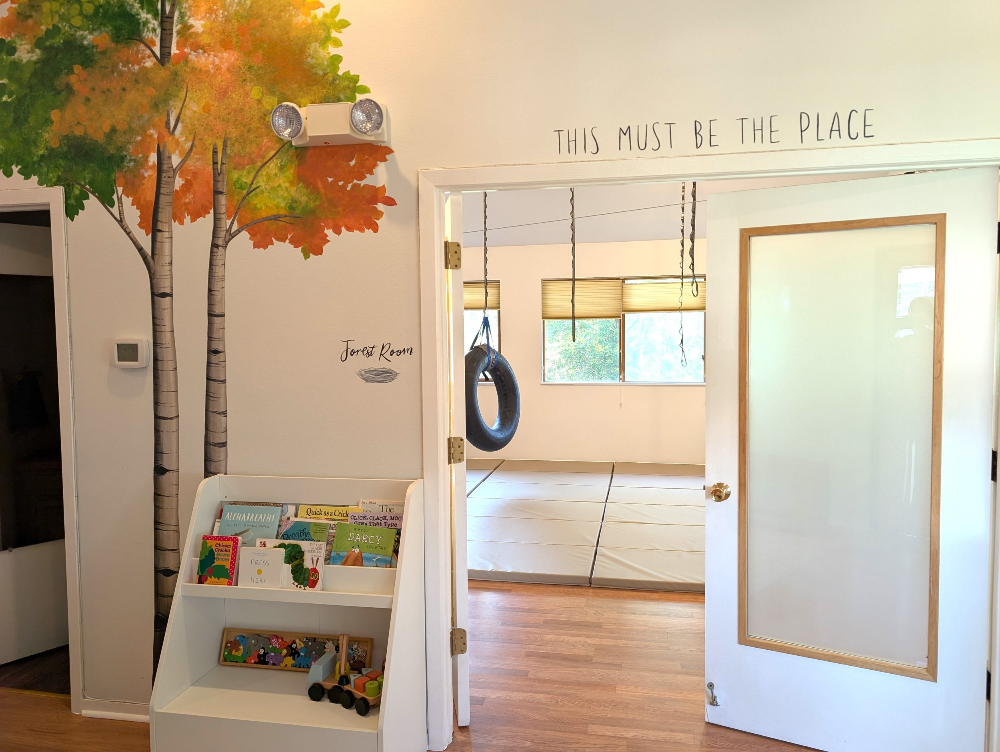
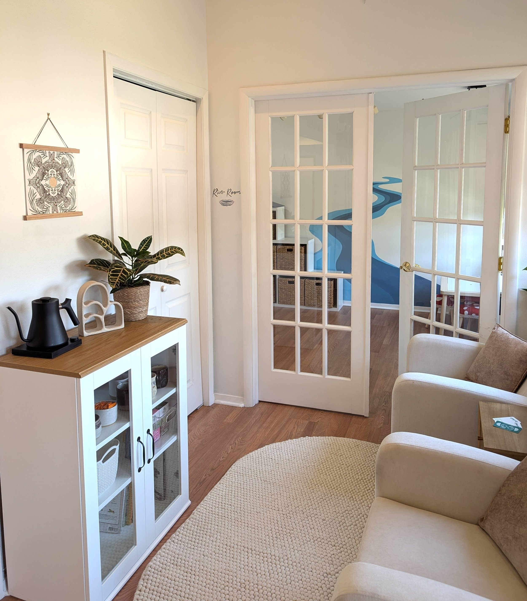
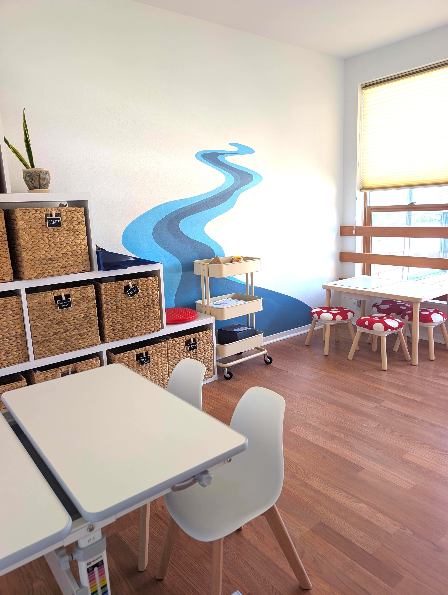
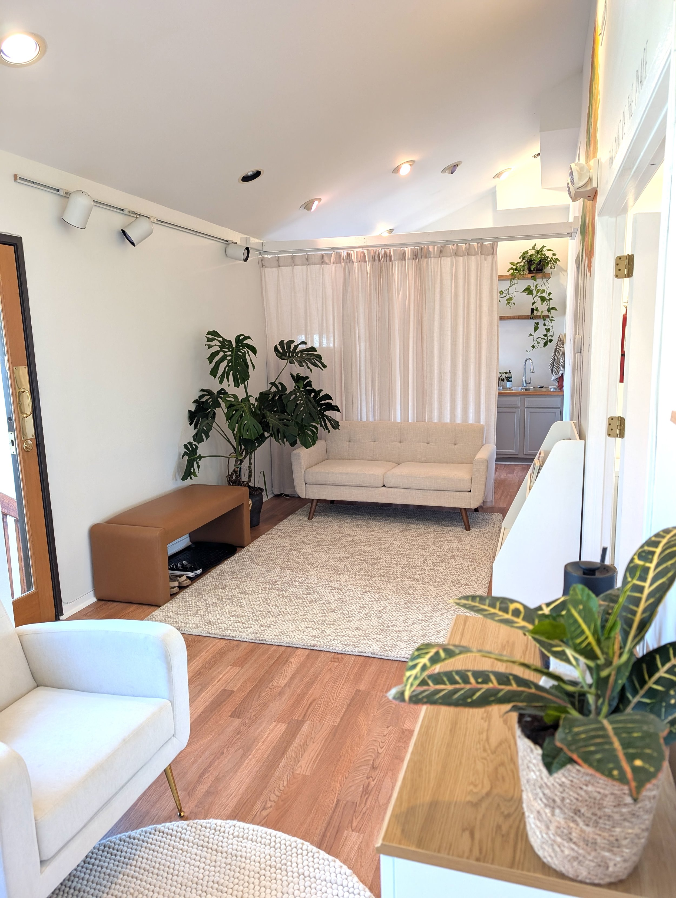

Finding joy and wellbeing through our senses
We empower kids to live their best lives through occupational therapy
Book a free consultationMeet your therapist
Hi! I'm Korrie Sparks
I'm dedicated to helping families like yours thrive — through evidence-based occupational therapy rooted in sensory integration, mindfulness, and play.

Our space




Does your child ever…
- Experience overwhelming emotions
- Overreact to touch, sound, or movement
- Appear distressed with dressing, bathing, or grooming
- Feel anxious at mealtimes or resist new foods
- Have trouble completing multi-step tasks
- Seem "busy" all the time with constant movement
- Break things easily or appear clumsy
- Have difficulty with hand-eye coordination
- Struggle to follow routines at home or school
- Take an unusually long time to learn new things
- Have messy handwriting, cutting, or coloring
- Have difficulty navigating friendships
Occupational therapy can support your child to enjoy greater ease around all these things — and more.
How we work
Our therapeutic approach
Dr. Korrie Sparks and her team provide therapy based on the whole child and family system. With advanced training in Ayres Sensory Integration® (ASI), we support kids to register, organize, and act on sensory information in their environment efficiently — addressing vision, touch, smell, taste, hearing, body position (proprioception), movement (vestibular), and inner body awareness (interoception). When kids can process sensory information without effort or stress, they feel happy, confident, and at ease.
Emotional regulation and self-awareness are woven into every session through yoga, mindfulness, the Zones of Regulation, the Alert Program®, Social Thinking curriculum, and elements of DIRFloortime® play therapy.
Nature-based therapy is central to our practice. Dr. Sparks completed Forest School Teacher Training in Scotland (FSTC, 2019) — because healing happens most naturally when we bring kids outside.
What families are saying
"My 3-year-old son went from being a 'great eater' to refusing almost everything but chips and ice cream. Meeting Julia gave us real hope that with expert help we can make eating fun again. I am so thankful to have found Julia and Korrie — forever grateful for the thoughtful, thorough guidance they've provided our family."
— Molly
"Korrie is not only super talented at her job, she is also wonderful with kids — an all-around kind and empathetic person. My son has been seeing her for two years and has made so many strides. He has conquered fears, overcome sensory sensitivities, and grown stronger and more resilient."
— Tamsin
"Korrie immediately connected with my son and helped cultivate a great passion and enjoyment of the work. After only a few months we are seeing big behavioral and physical control improvements. We are so grateful for the work she is doing and the improvement it has had on our lives."
— Lia
"Korrie tremendously helped our son through OT. She elevated his emotional and sensory regulation, and through her perceptive observations pinpointed an issue later confirmed by a vision therapist. He loved working with her and looked forward to each visit. The progress was immense."
— Bill
"Korrie is such a kind, collaborative soul. She truly listens and problem-solves to support children and their families. Our son loved going to his weekly sessions and made significant improvements. We highly recommend Korrie!"
— Colleen
"Korrie is an absolute gem — kind, patient, creative, and incredibly knowledgeable. Our child loves sessions and looks forward to seeing her every week on 'Korrie days.' If your family is looking into OT options, you have found the one."
— Meta
"We have noticed incredible growth and confidence in our daughter since she began working with Korrie. Her personality, knowledge, and ability to engage so well with children has been just what our daughter needed to make such significant strides."
— Denise